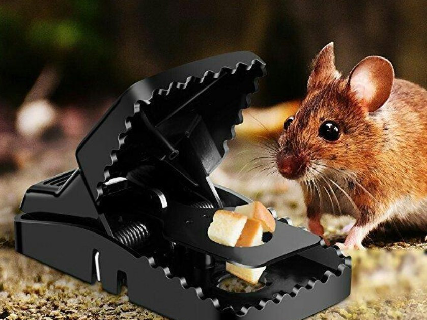

老鼠的危害
老鼠最大的危害当属破坏粮食，据统计，每年因为老鼠导致的亚洲水稻减产5%，约3亿吨稻谷，而这是18亿人一年的口粮。200年统计，我国农田鼠害发生面积约0.33亿h㎡，鼠害造成的粮食损失高达25亿kg以上，每年因为鼠害遭受的损失被认为是我国植保中危害最重的蝗虫、螟虫、小麦条锈病、粘虫等灾害的总和。
老鼠还会对林业和牧草业造成危害，2000年我国森林病虫鼠害严重，发生面积高达873.8h㎡，导致大量树木枯死。牧草业方面，但内蒙古草原区因为老鼠导致的牧草损失率就有15%-20%，重灾年份牧草损失率甚至高达44%，当下鼠害已经成为恶化草原生态环境的重要生物灾害。
此外，老鼠还会传播鼠疫、炭疽等多种疾病，危害到养殖行业，在大型养鸡场，雏鸡鼠咬率高达5%以上，每年被老鼠吃掉的鸡蛋高达5000kg，饲料上万公斤。
我国常见老鼠的种类
对农业有害的老鼠我国共有80多种，其中危害比较严重的有褐家鼠、黄毛鼠、小家鼠、板齿鼠、大足鼠等。对森林危害比较大的树种有40种左右，常见的有长吻松鼠、岩松鼠、花鼠、白腹巨鼠、长爪沙鼠、三趾跳鼠等。对草原危害比较大的主要有布氏田鼠、达乌尔鼠兔、高原鼠兔等。
而在我国农村粮仓里面常见的有褐家鼠、小家鼠、黑家鼠、黄胸鼠等。它们的共同特点是食性杂，人吃的东西以及各种粮食作物没有他们不吃的，甚至垃圾、粪便也能成为它们的食物。再就还繁殖能力很强，一年四季都能繁殖，一年可以产6-8胎，每一胎7-10只，而且子鼠从出生到性成熟只需要2-3个月的时间。
5种高效灭鼠方法分享，哪种效果更好？
1、机械灭鼠法
机械灭鼠算是历史最悠久的一种灭鼠方式了，早在公元前我国农民就已经开始使用陷阱、圈套等方式进行灭鼠了。当下可以选择的灭鼠器械有200多种，常见的有灭鼠夹、灭鼠笼、粘鼠板，此外还有套扣类、压板类、水淹类等器械。
机械灭鼠法最大的优势就是成本低，可以反复利用，而且很多器械农民都可以仿照自制。但同时劣势也很明显，灭鼠夹在操作时容易造成伤害、而捕鼠笼和粘鼠板长时间使用后会因为老鼠警惕性提高，而导致效果下降。该方法是农村控制老鼠比较有效的手段，也是农民经常使用的灭鼠方法。
2、化学灭鼠法
虽说化学灭鼠法存在污染环境、干扰生态平衡等问题，但直到目前化学灭鼠法依然是应用最广泛，效果最突出的灭鼠方法。按照作用机理不同，灭鼠药可以分为：
a、抗凝血灭鼠药，这种鼠药当下使用比较多的成分为溴敌隆、溴鼠隆、鼠得克、杀鼠灵等第二代抗凝血灭鼠剂。这种药物适合当地老鼠数量比较大的时候使用。
b、不育剂，可以分为植物型不育剂和人工合成不育剂，其中植物型研究比较多的有雷公藤提取物，从树棉、陆地棉等植物的种子和根皮中提取的棉酚，中药莪术提取物、秙楼块根中提取的天花粉蛋白等。它们或者是抑制雄鼠精子的产生，或者是提高雌鼠的刘产率、死胎率，达到抗生育的效果。化学不育剂研究比较多的是α-氯化醇。这种药物适合老鼠种群密度比较低时使用，且存在适口性差、效果可逆等问题。
此外，化学灭鼠法还会用到痉挛剂、肠道梗阻剂、以及增加毛细血管通透性的药剂、末梢血管收缩药等。
3、鼠类天敌灭鼠法
鼠类是很多动物的食物，所以鼠类天敌的种类也很多，大体可以分为小型猫科动物、猛禽、鼬科动物三大类，比如猫头鹰、蛇、赤狐、黄鼬、貂、白尾鹞、红隼等都能起到灭鼠的效果。比如一只黄鼬一年就能消灭掉3000-3500只老鼠，一条蛇一天就能捕食10多只老鼠，一只猫头鹰一年也能吃掉上千只老鼠。
在农村天敌灭鼠就是养殖家猫，相比于化学灭鼠破坏环境，机械灭鼠不可预见性太高，养猫灭鼠应该是值得推广的方法。但是需要注意，近些年随着家养猫数量的增多，不少地区已经产生野猫“泛滥”的问题，而猫是弓形体的唯一中间宿主，数量太多也存在传播寄生虫病的风险。
4、植物驱逐法
很多植物会发出一些特殊的气味，比如接骨木、紫苏、柠条、稠李等，农民可以在粮仓的周边种上这些植物，利用气味驱鼠。甚至在果园及其它的经济林当中也可以套种这些植物，从而达到驱鼠的效果。看似这种方法有效且无害，但仅是驱鼠并不能灭鼠，时间一长效果会大打折扣。
5、民间流传秘法
我曾听一位老人介绍了一种以鼠灭鼠的方法，就是活捉老鼠后先向其肛门中塞入黄豆，然后用绳子将捉到老鼠的肛门缝住，再放生，由于肛门被缝住老鼠只能吃不能排泄，时间一长就会腹胀疼痛，进而会疯狂攻击其它老鼠，而被缝住肛门的老鼠也多会在3、4天后死掉。
还有一种方法是用生石灰、面粉、炒熟的黄豆或者芝麻拌匀，加水做成丸，放在老鼠经常出没的地方，吃了此丸的老鼠会因为焦躁胀渴而死。
综合来讲，我认为农村灭鼠最直接高效的方法是化学灭鼠法，但这种灭鼠法会因为老鼠药的存在对其他动物造成危害。相对比较安全的是养猫灭鼠，但是存在野猫增多的问题。种植物驱鼠看似有效且无害，但其只是驱鼠并不灭鼠，并不是长久之计。如果农民粮仓中有老鼠，可以先使用化学灭鼠法将大多数老鼠消灭掉，然后养猫和种植物驱鼠相结合，但养殖的猫要定期做好驱虫和疫苗免疫，必要的时候甚至可以做绝育手术，以防数量大增形成新的危害。
上海五美是专业的上海保洁公司，提供写字楼保洁、大型综合商场保洁、工厂保洁、学校保洁、小区保洁、别墅区保洁、办公室保洁、大型游乐园保洁、开荒保洁、大理石翻新和养护、地毯清洗、水箱清洗、地面清洁、外墙清洗、物业管理、日常保洁外包等。欢迎广大新老客户前来咨询！
- 